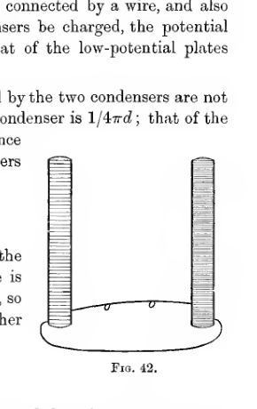
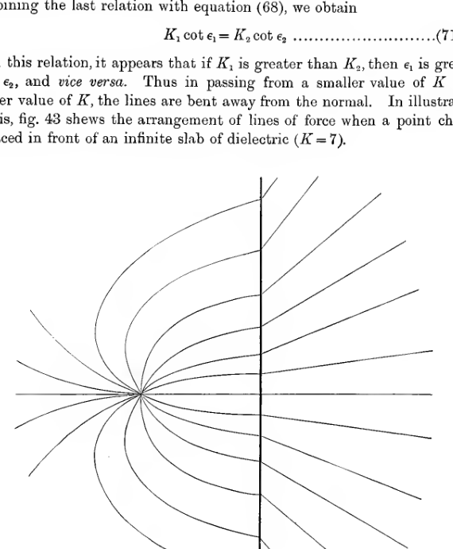
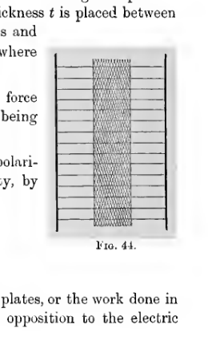
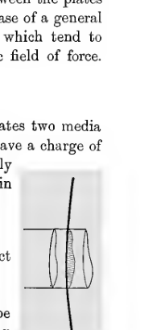
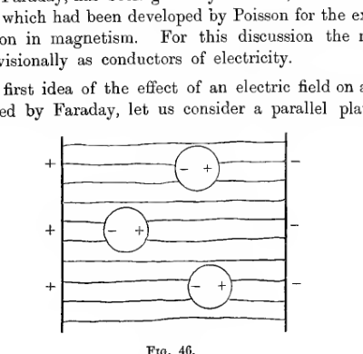
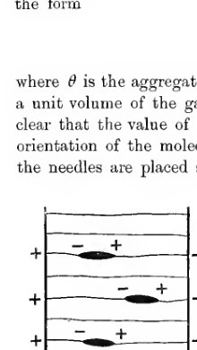
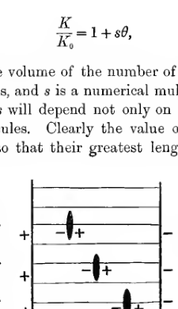
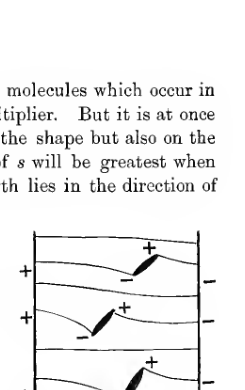

Chapter V#
Dielectrics and Inductive Capacity#
125. Mention has already been made (SS 84) of the fact, discovered originally by Cavendish, and afterwards rediscovered by Faraday, that the capacity of a conductor depends on the nature of the dielectric substance between its plates.
Let us imagine that we have two parallel plate condensers, similar in all respects except that one has nothing but air between its plates while in the other this space is filled with a dielectric of inductive capacity \(K\). Let us suppose that the two high-potential plates are connected by a wire, and also the two low-potential plates. Let the condensers be charged, the potential of the high-potential plates being \(V_1\), and that of the low-potential plates being \(V_0\).
Then it is found that the charges possessed by the two condensers are not equal. The capacity per unit area of the air-condenser is \(1/4\pi d\); that of the other condenser is found to be \(K/4\pi d\). Hence the charges per unit area of the two condensers are respectively
and
The work done in taking unit charge from the low-potential plate to the high-potential plate is the same in either condenser, namely \(V_1 - V_0\), so that the intensity between the plates in either condenser is the same, namely
In the air-condenser this intensity may be regarded as the resultant of the attraction of the negatively charged plate and the repulsion of the positively charged plate, the law of attraction or repulsion being Coulomb’s law \(e/r^2\).

Two similar upright condenser plates rise from an oval base, representing the comparison of parallel-plate condensers with different media between their plates. The figure is a simple schematic showing corresponding electrodes connected in the experiment discussed in article 125.
It is, however, obvious that if we were to calculate the intensity in the second condenser from this law, then the value obtained would be \(K\) times that in the first condenser, and would therefore be \(K\frac{V_1 - V_0}{d}\). In point of fact, the actual value of the intensity is known to be \(\frac{V_1 - V_0}{d}\).
Thus Faraday’s discovery shews that Coulomb’s law of force is not of universal validity: the law has only been proved experimentally for air, and it is now found not to be true for dielectrics of which the inductive capacity is different from unity.
This discovery has far-reaching effects on the development of the mathematical theory of electricity. In the present book, Coulomb’s law was introduced in S 38, and formed the basis of all subsequent investigations. Thus every theorem which has been proved in the present book from S 38 onwards requires reconsideration.
Experimental Basis#
126. We shall follow Faraday in treating the whole subject from the point of view of lines of force. The conceptions of potential, of intensity, and of lines of force are entirely independent of Coulomb’s law, and in the present book have been discussed (SS 30-37) before the law was introduced. The conception of a tube of force follows at once from that of a line of force, on imagining lines of force drawn through the different points on a small closed curve. Let us extend to dielectrics one form of the definition of the strength of a tube of force which has already been used for a tube in air, and agree that the strength of a tube is to be measured by the charge enclosed by its positive end, whether in air or dielectric.
In the dielectric condenser, the surface density on the positive plate is
and this, by definition, is also the aggregate strength of the tubes per unit area of cross-section. The intensity in the dielectric is \(\frac{V_1 - V_0}{d}\), so that in the dielectric the intensity is no longer, as in air, equal to \(4\pi\) times the aggregate strength of tubes per unit area, but is equal to \(4\pi/K\) times this amount.
Thus if \(P\) is the aggregate strength of the tubes per unit area of cross-section, the intensity \(R\) is related to \(P\) by the equation
in the dielectric, instead of by the equation
which was found to hold in air.
127. Equation (59) has been proved to be the appropriate generalisation of equation (60) only in a very special case. Faraday, however, believed the relation expressed by equation (59) to be universally true, and the results obtained on this supposition are found to be in complete agreement with experiment. Hence equation (59), or some equation of the same significance, is universally taken as the basis of the mathematical theory of dielectrics. We accordingly proceed by assuming the universal truth of equation (59), an assumption for which a justification will be found when we come to study the molecular constitution of dielectrics.
It is convenient to have a single word to express the aggregate strength of tubes per unit area of cross-section, the quantity which has been denoted by \(P\). We shall speak of this quantity as the “polarisation,” a term due to Faraday. Maxwell’s explanation of the meaning of the term “polarisation” is that “an elementary portion of a body may be said to be polarised when it acquires equal and opposite properties on two opposite sides.” Faraday explained the properties of dielectrics by means of his conception that the molecules of the dielectric were in a polarised state, and the quantity \(P\) is found to measure the amount of the polarisation at any point in the dielectric. We shall come to this physical interpretation of the quantity \(P\) at a later stage: for the present we simply use the term “polarisation” as a name for the mathematical quantity \(P\).
This same quantity is called the “displacement” by Maxwell, and underlying the use of this term also, there is a physical interpretation which we shall come upon later.
128. We now have as the basis of our mathematical theory the following:
Definition. The strength of a tube of force is defined to be the charge enclosed by the positive end of the tube.
Definition. The polarisation at any point is defined to be the aggregate strength of tubes of force per unit area of cross-section.
Experimental Law. The intensity at any point is \(4\pi/K\) times the polarisation, where \(K\) is the inductive capacity of the dielectric at the point.
In this last relation, we measure the intensity along a line of force, while the polarisation is measured by considering the flux of tubes of force across a small area perpendicular to the lines of force. Suppose, however, that we take some direction \(OO'\) making an angle \(\theta\) with that of the lines of force. The aggregate strength of the tubes of force which cross an area \(dS\) perpendicular to \(OO'\) will be \(P\cos\theta\,dS\), for these tubes are exactly those which cross an area \(dS\cos\theta\) perpendicular to the lines of force. Thus, consistently with the definition of polarisation, we may say that the polarisation in the direction \(OO'\) is equal to \(P\cos\theta\). Since the polarisation in any direction is equal to \(P\) multiplied by the cosine of the angle between this direction and that of the lines of force, it is clear that the polarisation may be regarded as a vector, of which the direction is that of the lines of force, and of which the magnitude is \(P\).
The polarisation having been seen to be a vector, we may speak of its components \(f, g, h\). Clearly \(f\) is the number of tubes per unit area which cross a plane perpendicular to the axis of \(x\), and so on.
The result just obtained may be expressed analytically by the equations
129. The polarisation \(P\) being measured by the aggregate strength of tubes per unit area of cross-section, it follows that if \(\omega\) is the cross-section at any point of a tube of strength \(e\), we have \(e = \omega P\). Now we have defined the strength of a tube of force as being equal to the charge at its positive end, so that by definition the strength of a tube does not vary from point to point of the tube. Thus the product \(\omega P\) is constant along a tube, or \(\omega K R\) is constant along a tube, replacing the result that \(\omega R\) is constant in air (S 56).
The value of the product \(\omega P\) at any point \(O\) of a tube, being equal to \(\omega K R/4\pi\), depends only on the physical conditions prevailing at the point \(O\). It is, however, known to be equal to the charge at the positive end of the tube. Hence it must also, from symmetry, be equal to minus the charge at the negative end of the tube. Thus the charges at the two ends of a tube, whether in the same or in different dielectrics, will be equal and opposite, and the numerical value of either is the strength of the tube.
Gauss’ Theorem#
130. Let \(S\) be any closed surface, and let \(\epsilon\) be the angle between the direction of the outward normal to any element of surface \(dS\) and the direction of the lines of force at the element. The aggregate strength of the tubes of force which cross the element of area \(dS\) is \(P\cos\epsilon\,dS\), and the integral
which may be called the surface integral of normal polarisation, will measure the aggregate strength of all the tubes which cross the surface \(S\), the strength of a tube being estimated as positive when it crosses the surface from inside to outside, and as negative when it crosses in the reverse direction.
A tube which enters the surface from outside, and which, after crossing the space enclosed by the surface, leaves it again, will add no contribution to \(\iint P\cos\epsilon\,dS\), its strength being counted negatively where it enters the surface, and positively where it emerges. A tube which starts from or ends on a charge \(e\) inside the surface \(S\) will, however, supply a contribution to \(\iint P\cos\epsilon\,dS\) on crossing the surface. If \(e\) is positive, the strength of the tube is \(e\); and, as it crosses from inside to outside, it is counted positively, and the contribution to the integral is \(e\). Again, if \(e\) is negative, the strength of the tube is \(-e\), and this is counted negatively, so that the contribution is again \(e\).
Thus on summing for all tubes,
where \(E\) is the total charge inside the surface. The left-hand member is simply the algebraical sum of the strengths of the tubes which begin or end inside the surface; the right-hand member is the algebraical sum of the charges on which these tubes begin or end. Putting
the equation becomes
The quantity \(R\cos\epsilon\) is, however, the component of intensity along the outward normal, the quantity which has been previously denoted by \(N\), so that we arrive at the equation
When the dielectric was air, Gauss’ theorem was obtained in the form
Equation (61) is therefore the generalised form of Gauss’ Theorem which must be used when the inductive capacity is different from unity. Since \(N = -\partial V/\partial n\), the equation may be written in the form
131. The form of this equation shews at once that a great many results which have been shewn to be true for air are true also for dielectrics other than air. It is obvious, for instance, that \(V\) cannot be a maximum or a minimum at a point in a dielectric which is not occupied by an electric charge; as a consequence all lines of force must begin and end on charged bodies, a result which was tacitly assumed in defining the strength of a tube of force.
A number of theorems were obtained in the discussion of the electrostatic field in air, by taking a Gauss’ Surface, partly in air and partly in a conductor. Gauss’ Theorem was used in the form
but we now see that if the inductive capacity of the conductor were not equal to unity, this equation ought to be replaced by equation (61). It is, however, clear that the difference cannot affect the final result; \(N\) is zero inside a conductor, so that it does not matter whether \(N\) is multiplied by \(K\) or not.
Thus results obtained for systems of conductors in air upon the assumption that Coulomb’s law of force holds throughout the field are seen to be true whether the inductive capacity inside the conductors is equal to unity or not.
The Equations of Poisson and Laplace#
132. In S 49, we applied Gauss’ theorem to a surface which was formed by a small rectangular parallelepiped, of edges \(dx\), \(dy\), \(dz\), parallel to the axes of coordinates. If we apply the theorem expressed by equation (61) to the same element of volume, we obtain
where \(\rho\) is the volume density of electrification. This, then, is the generalised form of Poisson’s equation: the generalised form of Laplace’s equation is obtained at once on putting \(\rho = 0\).
In terms of the components of polarisation, equation (62) may be written
while if the dielectric is uncharged,
Electric Charges in an Infinite Homogeneous Dielectric#
133. Consider a charge \(e\) placed by itself in an infinite dielectric. If the dielectric is homogeneous, it follows from considerations of symmetry that the lines of force must be radial, as they would be in air. By application of equation (61) to a sphere of radius \(r\), having the point charge as centre, it is found that the intensity at a distance \(r\) from the charge is
The force between two point charges \(e, e'\) at distance \(r\) apart in a homogeneous unbounded dielectric is therefore
and the potential of any number of charges, obtained by integration of this expression, is
Coulomb’s Equation#
134. The strength of a tube being measured by the charge at its end, it follows that at a point just outside a conductor, \(P\), the aggregate strength of the tubes per unit of cross-section, becomes numerically equal to \(\sigma\), the surface density. We have also the general relation
and on replacing \(P\) by \(\sigma\), we arrive at the generalised form of Coulomb’s equation,
in which \(K\) is the inductive capacity at the point under consideration.
Conditions To Be Satisfied At The Boundary Of A Dielectric#
135. Let us examine the conditions which will obtain at a boundary at which the inductive capacity changes abruptly from \(K_1\) to \(K_2\).
The potential must be continuous in crossing the boundary, for if \(P, Q\) are two infinitely near points on opposite sides of the boundary, the work done in bringing a small charge to \(P\) must be the same as that done in bringing it to \(Q\). As a consequence of the potential being continuous, it follows that the tangential components of the intensity must also be continuous. For if \(P, Q\) are two very near points on different sides of the boundary, and \(P', Q'\) a similar pair of points at a small distance away, we have \(V_P = V_Q\), and \(V_{P'} = V_{Q'}\), so that
The expressions on the two sides of this equation are, however, the two intensities in the direction \(PP'\), on the two sides of the boundary, which establishes the result.
Also, if there is no charge on the boundary, the aggregate strength of the tubes which meet the boundary in any small area on this boundary is the same whether estimated in the one dielectric or the other, for the tubes do not alter their strength in crossing the boundary, and none can begin or end in the boundary. Thus the normal component of the polarisation is continuous.
136. If \(R_1\) is the intensity in the first medium of inductive capacity \(K_1\), measured at a point close to the boundary, and if \(\epsilon_1\) is the angle which the lines of force make with the normal to the boundary at this point, then the normal polarisation in the first medium is
Similarly, that in the second medium is
so that
Since, in the notation already used,
the equation just obtained may be put in either of the forms
In these equations, it is a matter of indifference whether the normal is drawn from the first medium to the second or in the reverse direction; it is only necessary that the same normal should be taken on both sides of the equation. Relation (70) is obtained at once on applying the generalised form of Gauss’ theorem to a small cylinder having parallel ends at infinitesimal distance apart, one in each medium.
137. To sum up, we have found that in passing from one dielectric to another, the surface of separation being uncharged:
the tangential components of intensity have the same values on the two sides of the boundary,
the normal components of polarisation have the same values.
Or, in terms of the potential,
\(V\) is continuous,
\(K\,\partial V/\partial n\) is continuous.
Refraction of the Lines of Force#
138. From the continuity of the tangential components of intensity, it follows:
that the directions of \(R_1\) and \(R_2\), the intensities on the two sides of the boundary, must lie in a plane containing the normal, and
that \(R_1 \sin\epsilon_1 = R_2 \sin\epsilon_2\).
Combining the last relation with equation (68), we obtain
From this relation, it appears that if \(K_1\) is greater than \(K_2\), then \(\epsilon_1\) is greater than \(\epsilon_2\), and vice versa. Thus in passing from a smaller value of \(K\) to a greater value of \(K\), the lines are bent away from the normal. In illustration of this, fig. 43 shews the arrangement of lines of force when a point charge is placed in front of an infinite slab of dielectric (\(K = 7\)).

A point charge at the left sends out lines of force toward a vertical dielectric boundary. On entering the slab, the lines bend away from the normal, illustrating the refraction law for lines of electric force at a dielectric interface.
A small charged particle placed at any point of this field will experience a force of which the direction is along the tangent to the line of force through the point. The force is produced by the point charge, but its direction will not in general pass through the point charge. Thus we conclude that in a field in which the inductive capacity is not uniform the force between two point charges does not in general act along the line joining them.
139. As an example of the action of a dielectric let us imagine a parallel plate condenser in which a slab of dielectric of thickness \(t\) is placed between the plates, its two faces being parallel to the plates and at distances \(a, b\) from them, so that \(a + b + t = d\), where \(d\) is the distance between the plates.
It is obvious from symmetry that the lines of force are straight throughout their path, equation (71) being satisfied by \(\epsilon_1 = \epsilon_2 = 0\).
Let \(\sigma\) be the charge per unit area, so that the polarisation is equal to \(\sigma\) everywhere. The intensity, by equation (67), is
and
Hence the difference of potential between the plates, or the work done in taking unit charge from one plate to the other in opposition to the electric intensity, is
and the capacity per unit area is
Thus the introduction of the slab of dielectric has the same effect as moving the plates a distance \(\left(1 - \frac{1}{K}\right)t\) nearer together.
Suppose now that the slab is partly outside the condenser and partly between the plates. Of the total area \(A\) of the condenser, let an area \(B\) be occupied by the slab of dielectric, an area \(A-B\) having only air between the plates.

Two parallel condenser plates are shown with a shaded dielectric slab between them. Straight horizontal lines of force pass through the air and the slab, illustrating that the slab effectively shortens the electric path between the plates.
The lines of force will be straight, except for those which pass near to the edge of the dielectric slab. Neglecting a small correction required by the curvature of these lines, the capacity \(C\) of the condenser is given by
or
a quantity which increases as \(B\) increases. If \(V\) is the potential difference and \(E\) the charge, the electrical energy
If we keep the charge constant, the electrical energy increases as the slab is withdrawn. There must therefore be a mechanical force tending to resist withdrawal: the slab of dielectric will be sucked in between the plates of the condenser. This, as will be seen later, is a particular case of a general theorem that any piece of dielectric is acted on by forces which tend to drag it from the weaker to the stronger parts of an electric field of force.
140. Let \(dS\) be any small area of a surface which separates two media of inductive capacities \(K_1, K_2\), and let this bounding surface have a charge of electricity, the surface density over \(dS\) being \(\sigma\). If we apply Gauss’ Theorem to a small cylinder circumscribing \(dS\) we obtain
where \(\partial/\partial \nu\) in either medium denotes differentiation with respect to the normal drawn away from \(dS\) into the dielectric.

A narrow cylindrical Gaussian surface straddles a charged dielectric boundary. The sketch shows the pillbox construction used to relate the jump in normal potential-gradient terms to the surface charge density on the interface.
141. As we have seen, the surface of a dielectric may be charged by friction. A more interesting way is by utilising the conducting powers of a flame.
Let us place a charge \(e\) in front of a slab of dielectric as in fig. 43. A flame issuing from a metal lamp held in the hand may be regarded as a conductor at potential \(0\). On allowing the flame to play over the surface of the dielectric, this surface is reduced to potential zero, and the distribution of the lines of force is now exactly the same as if the face of the dielectric were replaced by a conducting plane at potential \(0\). The lines of force from the point charge terminate on this plane, so that there must be a total charge \(-e\) spread over it. If the plane were actually a conductor this would simply be an induced charge. If, however, the plane is the boundary of a dielectric, the charge differs from an induced charge on a conductor in that it cannot disappear if the original charge \(e\) is removed. For this reason, Faraday described it as a “bound” charge. The charge has of course come to the dielectric through the conducting flame.
Molecular Action In A Dielectric#
142. From the observed influence of the structure of a dielectric upon the electric phenomena occurring in a field in which it was placed, Faraday was led to suppose that the particles of the dielectric themselves took part in this electric action. After describing his researches on the electric action - “induction” to use his own term - in a space occupied by dielectric he says:
“Thus induction appears to be essentially an action of contiguous particles, through the intermediation of which the electric force, originating or appearing at a certain place, is propagated to or sustained at a distance….”
“Induction appears to consist in a certain polarised state of the particles, into which they are thrown by the electrified body sustaining the action, the particles assuming positive and negative points or parts….”
“With respect to the term polarity…, I mean at present…a disposition of force by which the same molecule acquires opposite powers on different parts.”
And again, later:
“I do not consider the powers when developed by the polarisation as limited to two distinct points or spots on the surface of each particle to be considered as the poles of an axis, but as resident on large portions of that surface, as they are upon the surface of a conductor of sensible size when it is thrown into a polar state.”
“In such solid bodies as glass, lac, sulphur, etc., the particles appear to be able to become polarised in all directions, for a mass when experimented upon so as to ascertain its inductive capacity in three or more directions, gives no indication of a difference. Now, as the particles are fixed in the mass, and as the direction of the induction through them must change with its charge relative to the mass, the constant effect indicates that they can be polarised electrically in any direction.”
143. A mathematical discussion of the action of a dielectric constructed as imagined by Faraday, has been given by Mossotti, who utilised a mathematical method which had been developed by Poisson for the examination of a similar question in magnetism. For this discussion the molecules are represented provisionally as conductors of electricity.
To obtain a first idea of the effect of an electric field on a dielectric of the kind pictured by Faraday, let us consider a parallel plate condenser, having a number of insulated uncharged conducting molecules in the space between the plates. Imagine a tube of strength \(e\) meeting a molecule. At the point where this occurs, the tube terminates by meeting a conductor, so that there must be a charge \(-e\) on the surface of the molecule. Since the total charge on the molecule is nil there must be a corresponding charge on the opposite surface, and this charge may be regarded as a point of restarting of the tube. The tube then may be supposed to be continually stopped and restarted by molecules as it crosses from one plate of the condenser to the other. At each encounter with a molecule there are induced charges \(-e, +e\) on the surface of the molecule. Any such pair of charges, being only at a small distance apart, may be regarded as forming a small doublet, of the kind of which the field of force was investigated in S 64.

Between two parallel charged plates, several circular molecules appear within nearly straight lines of force. Each molecule carries opposite induced charges on opposite sides, representing the polarised conducting-molecule model used in Mossotti’s discussion.
144. We have now replaced the dielectric by a series of conductors, the medium between which may be supposed to be air or ether. In the space between these conductors the law of force will be that of the inverse square. In calculating the intensity at any point from this law we have to reckon the forces from the doublets as well as the forces from the original charges on the condenser-plates. A glance at fig. 46 will shew that the forces from the doublets act in opposition to the original forces. Thus for given charges on the condenser-plates the intensity at any point between the plates is lessened by the presence of conducting molecules.
This general result can be seen at once from the theorem of S 121. The introduction of new conductors (the molecules) lessens the energy corresponding to given charges on the plates, i.e. increases the capacity of the condenser, and so lessens the intensity between the plates.
145. In calculating that part of the intensity which arises from the doublets, it will be convenient to divide the dielectric into concentric spherical shells having as centre the point at which the intensity is required. The volume of the shell of radii \(r\) and \(r + dr\) is \(4\pi r^2 dr\), so that the number of doublets included in it will contain \(r^2 dr\) as a factor. The potential produced by any doublet at a point distant \(r\) from it is \(\mu \cos\theta / r^2\), so that the intensity will contain a factor \(1/r^3\). Thus the intensity arising from all the doublets in the shell of radii \(r, r + dr\) will depend on \(r\) through the factor \(\frac{1}{r^3} \cdot r^2 dr\) or \(dr/r\).
The importance of the different shells is accordingly the same, as regards comparative orders of magnitude, as that of the corresponding contributions to the integral \(\int dr/r\). The value of this integral is \(\log r + a\) constant, and this is infinite when \(r = 0\) and when \(r = \infty\). Thus the important contributions come from very small and very large values of \(r\). It can however be seen that the contributions from large values of \(r\) neutralise one another, for the term \(\cos\theta\) in the potentials of the different doublets will be just as often positive as negative.
Hence it is necessary only to consider the contributions from shells for which \(r\) is very small, so that the whole field at any point may be regarded as arising entirely from the doublets in the immediate neighbourhood of the point. The force will obviously vary as we move in and out amongst the molecules, depending largely on the nearness and position of the nearest molecules. If, however, we average this force throughout a small volume, we shall obtain an average intensity of the field produced by the doublets, and this will depend only on the strength and number of the doublets in and near to this element of volume. Obviously this average intensity near any point will be exactly proportional to the average strength of the doublets near the point, and this again will be exactly proportional to the strength of the inducing field by which the doublets are produced, so that at any point we may say that the average field of the doublets stands to the total field in a ratio which depends only on the structure of the medium at the point.
146. Now suppose that our measurements are not sufficiently refined to enable us to take account of the rapid changes of intensity of the electric field which must occur within small distances of molecular order of magnitude. Let us suppose, as we legitimately may, that the forces which we measure are forces averaged through a distance which contains a great number of molecules. Then the force which we measure will consist of the sum of the average force produced by the doublets, and of the force produced by the external field. The field which we observe may accordingly be regarded as the superposition of two fields, or what amounts to the same thing, the observed intensity \(R\) may be regarded as the resultant of two intensities \(R_1, R_2\), where
\(R_1\) is the average intensity arising from the neighbouring doublets,
\(R_2\) is the intensity due to the charges outside the dielectric, and to the distant doublets in the dielectric.
These forces, as we have seen, must be proportional to one another, so that each must be proportional to the polarisation \(P\). It follows that \(P\) is proportional to \(R\), the ratio depending only on the structure of the medium at the point. If we take the relation to be
then \(K\) is the inductive capacity at the point, and the relation between \(R\) and \(P\) is exactly the relation upon which our whole theory has been based.
147. The theory could accordingly be based on Mossotti’s theory, instead of on Faraday’s assumption, and from the hypothesis of molecular polarisation we should be able to deduce all the results of the theory, by first deducing equation (73) from Mossotti’s hypothesis, and then the required results from equation (73) in the way in which they have been deduced in the present chapter.
Thus the influence of the conducting molecules produces physically the same result as if the properties of the medium were altered in the way suggested by Faraday, and mathematically the properties of the medium are in either case represented by the presence of the factor \(K\) in equation (73).
Relation Between Inductive Capacity And Structure Of Medium#
148. The electrostatic unit of force was defined in such a way that the inductive capacity of air was taken as unity. It is now obvious that it would have been more scientific to have taken ether as standard medium, so that the inductive capacity of every medium would have been greater than unity. Unfortunately, the practice of referring all inductive capacities to air as standard has become too firmly established for this to be possible. The difference between the two standards is very slight, the inductive capacity of normal air in terms of ether being \(1.000590\). Thus the inductive capacity of a vacuum may be taken to be \(.99941\) referred to air.
So long as the molecules are at distances apart which are great compared with their linear dimensions, we may neglect the interaction of the charges induced on the different molecules, and treat their effects as additive. It follows that in a gas \(K-K_0\), where \(K_0\) is the inductive capacity of free ether, ought to be proportional to the density of the gas. This law is found to be in exact agreement with experiment.
149. It is, however, possible to go further and calculate the actual value of the ratio of \(K-K_0\) to the density. We have seen that this will be a constant for a given substance, so that we shall determine its value in the simplest case: we shall consider a thin slab of the dielectric placed in a parallel plate condenser, as described in S 139. Let this slab be of thickness \(\epsilon\), and let it coincide with the plane of \(yz\). Let the dielectric contain \(n\) molecules per unit volume.
The element \(dydz\) will contain \(n\epsilon\,dydz\) molecules. If each of these is a doublet of strength \(\mu\), the element \(dydz\) will have a field which will be equivalent at all distant points to that of a single doublet of strength \(n\mu\epsilon\,dydz\). This is exactly the field which would be produced if the two faces of the slab were charged with electricity of surface density \(\pm n\mu\).
We can accordingly at once find the field produced by these doublets - it is the same as that of a parallel plate condenser, in which the plates are at distance \(\epsilon\) apart and are charged to surface density \(\pm n\mu\). There is no intensity except between the plates, and here the intensity of the field is \(4\pi n\mu\).
Thus if \(R\) is the total intensity outside the slab, that inside will be \(R - 4\pi n\mu\). If \(K\) is the inductive capacity of the material of the slab, and \(K_0\) that of the free ether outside the slab, we have
so that
It remains to determine the ratio \(\mu/R\). The potential of a doublet is \(\mu x/r^3\) while that of the field \(R\) may be taken to be \(-Rx + C\). Thus the total potential of a single doublet and the external field is
and this makes the surface \(r = a\) an equipotential if \(\mu/a^3 = R\). Thus the surfaces of the molecules will be equipotentials if we imagine the molecules to be spheres of radius \(a\), and the centres of the doublets to coincide with the centres of the spheres, the strength of each doublet being \(Ra^3\).
Putting \(\mu = Ra^3\), equation (74) becomes
Now in unit volume of dielectric, the space occupied by the \(n\) molecules is \(\frac{4\pi}{3}na^3\). Calling this quantity \(\theta\), we have \(\frac{K-K_0}{K} = 3\theta\), or, since our calculations only hold on the hypothesis that \(\theta\) is small,
If the lines of force went straight across from one plate of the condenser to the other, the proportion of the length of each which would be inside a conductor would, on the average, be \(\theta\). Since there is no fall of potential inside a conductor, the total fall of potential from one plate to the other would be only \(1-\theta\) times what it would be if the molecules were absent, and the ratio \(K/K_0\) would be \(1/(1-\theta)\) or, if \(\theta\) is small, \(1+\theta\). Since, however, the lines of force tend to run through conductors wherever possible, there is more shortening of lines of force than is shewn by this simple calculation. Equation (75) shews that when the molecules are spherical the effect is three times that given by this simple calculation. For other shapes of molecules the multiplying factor might of course be different.
Equation (75) gives at once a method of determining \(\theta\) for substances for which \(\theta\) is small, namely gases, but, owing to the unwarranted assumption that the molecules are spherical, the results will be true as regards order of magnitude only. If the dielectric is a gas at atmospheric pressure, the value of \(n\) is known, being roughly \(2.75 \times 10^{19}\), and this enables us to calculate the value of \(a\).
150. The following table gives series of values of \(K/K_0\) for gases at atmospheric pressure:
Gas |
Symbol |
\(K/K_0\) observed |
Authority |
Mean \(K/K_0\) |
\(a\) calculated (Mossotti’s Theory) |
\(a\) calculated (Theory of Gases) |
|---|---|---|---|---|---|---|
Helium |
He |
\(1.0000724\) |
3 |
\(1.0000724\) |
\(.596 \times 10^{-8}\) |
\(1.09 \times 10^{-8}\) |
Hydrogen |
\(H_2\) |
\(1.000264\), \(1.000264\) |
1, 2 |
\(1.000264\) |
\(.916 \times 10^{-8}\) |
\(1.20 \times 10^{-8}\) |
Oxygen |
\(O_2\) |
\(1.000543\) |
3 |
\(1.000543\) |
\(1.17 \times 10^{-8}\) |
\(1.63 \times 10^{-8}\) |
Argon |
Ar |
\(1.000566\) |
3 |
\(1.000566\) |
\(1.18 \times 10^{-8}\) |
\(1.68 \times 10^{-8}\) |
Air |
- |
\(1.000590\), \(1.000586\) |
1, 2 |
\(1.000588\) |
\(1.19 \times 10^{-8}\) |
\(1.67 \times 10^{-8}\) |
Nitrogen |
\(N_2\) |
\(1.000594\) |
3 |
\(1.000594\) |
\(1.20 \times 10^{-8}\) |
\(1.72 \times 10^{-8}\) |
Carbon Monoxide |
CO |
\(1.000690\), \(1.000694\) |
1, 2 |
\(1.000692\) |
\(1.26 \times 10^{-8}\) |
\(1.72 \times 10^{-8}\) |
Carbon Dioxide |
\(CO_2\) |
\(1.000946\), \(1.000984\) |
1, 2 |
\(1.000965\) |
\(1.40 \times 10^{-8}\) |
\(2.04 \times 10^{-8}\) |
Nitrous Oxide |
\(N_2O\) |
\(1.000994\), \(1.001158\) |
1, 2 |
\(1.001082\) |
\(1.46 \times 10^{-8}\) |
\(2.11 \times 10^{-8}\) |
Ethylene |
\(C_2H_4\) |
\(1.001312\), \(1.001458\) |
1, 2 |
\(1.001385\) |
\(1.60 \times 10^{-8}\) |
\(2.30 \times 10^{-8}\) |
Authorities: 1. Boltzmann, Wiener Sitzungsber. 69, p. 795. 2. J. Klemencic, Wiener Sitzungsber. 91, p. 712. 3. These values are calculated from the refractive indices for Sodium Light.
Jeans, Dynamical Theory of Gases, p. 340. The values here given have been recalculated, using the value \(n = 2.75 \times 10^{19}\).
151. It still remains to explain what physical property of the molecule justifies us in treating its surface as a perfect conductor. It has already been explained that all matter has associated with it - or perhaps entirely composing it - a number of charged electric particles, or electrons. It is to the motion of these that the conduction of electricity is due. In a dielectric there is no conduction, so that each electron must remain permanently associated with the same molecule. There is, however, plenty of evidence that the electrons are not rigidly fixed to the molecules but are free to move within certain limits. The molecule may be regarded as consisting partially or wholly of a cluster of electrons, normally at rest in positions of equilibrium under the various attractions and repulsions present, but capable of vibrating about these positions. Under the influence of an external field of force, the electrons will move slightly from their equilibrium positions - we may imagine that a kind of tidal motion of electrons takes place in the molecule. Obviously, by the time that equilibrium is attained, the outer surface of the molecule must be an equipotential. This, however, is exactly what is required for Mossotti’s hypothesis. We may accordingly abandon the conception of conducting spheres, which was only required to make the surface of the molecule an equipotential, and may, without impairing the power of Mossotti’s explanation, replace these conducting spheres by shells of electrons. If in some way we can further replace these shells by rings of electrons in rapid orbital motion, the modified hypothesis will be in very close agreement with modern beliefs as to the structure of matter.
On this view, the quantity \(a\) tabulated in the sixth column of the table on p. 132, will measure the radius of the outermost shell of electrons. Even outside this outermost shell, however, there will be an appreciable field of force, so that when two molecules of a gas collide there will in general be a considerable distance between their outermost layers of electrons. Thus if the collisions of molecules in a gas are to be regarded as the collisions of elastic spheres, the radius of these spheres must be supposed to be considerably greater than \(a\). Now it is the radius of these imaginary elastic spheres which we calculate in the Kinetic Theory of Gases: there is therefore no difficulty in understanding the differences between the two sets of values for \(a\) given in the table of p. 132.
It is known that molecules are not in general spherical in shape, but, as we shall see below, there is no difficulty in extending Mossotti’s theory to cover the case of non-spherical molecules.
Anisotropic Media#
152. There are some dielectrics, generally of crystalline structure, in which Faraday’s relation between polarisation and intensity is found not to be true. The polarisation in such dielectrics is not, in general, in the same direction as the intensity, and the angle between the polarisation and the intensity and also the ratio of these quantities are found to depend on the direction of the field relatively to the axes of the crystal. We shall find that the conception of molecular action accounts for these peculiarities of crystalline dielectrics.
Let us consider an extreme case in which the spherical molecules of fig. 46 are replaced by a number of very elongated or needle-shaped bodies. The lines of force will have their effective lengths shortened by an amount which depends on whether much or little of them falls within the material of the needle-shaped molecules, and, as in S 149, there will be an equation of the form
where \(\theta\) is the aggregate volume of the number of molecules which occur in a unit volume of the gas, and \(s\) is a numerical multiplier. But it is at once clear that the value of \(s\) will depend not only on the shape but also on the orientation of the molecules. Clearly the value of \(s\) will be greatest when the needles are placed so that their greatest length lies in the direction of the lines of force, as in fig. 46 a, and will be least when the needles lie at right angles to this position, as in fig. 46 b. Or to put the matter in another way, a piece of dielectric in which the molecules are needle-shaped and parallel will exhibit different values of \(K\) according as the field of force is parallel or at right angles to the lengths of the needles.

Needle-shaped molecules lie mainly along the direction of the horizontal lines of force, so much of each line passes through the molecules. This is the orientation for which the effective shortening, and therefore the dielectric effect, is greatest.

Needle-shaped molecules stand nearly at right angles to the horizontal field lines, so much less of each line lies within the molecules. This gives the limiting case of a much smaller dielectric effect.

The needle-like molecules are all inclined at the same angle to the field, and the lines of force are both shortened and twisted. The figure illustrates the anisotropic case in which polarisation and intensity need not point in the same direction.
This extreme case illustrates the fundamental property of crystalline dielectrics, but it ought to be understood that in actual substances the values of \(K\) do not differ so much for different directions as this extreme case might be supposed to suggest. For instance for quartz, one of the substances in which the difference is most marked, Curie finds the extreme values of \(K\) to be \(4.55\) and \(4.49\).
Before attempting to construct a mathematical theory of the behaviour of a crystalline dielectric we may examine the case of a dielectric having needle-shaped molecules placed parallel to one another, but so as to make any angle \(\theta\) with the direction of the lines of force, as in fig. 46 c.
It is at once clear that not only are the effective lengths of the lines of force shortened by the presence of the molecules, but also the directions of the lines of force are twisted. It follows that the polarisation, regarded as a vector as in S 128, must in general have a direction different from that of the average intensity \(R\) of the field.
To analyse such a case we shall, as in S 146, regard the field near any point as the superposition of two fields:
the field which arises from the doublets on the neighbouring molecules, say a field of components of intensity \(X_1, Y_1, Z_1\);
the field caused by the doublets arising from the distant molecules and from the charges outside the dielectric, say a field of components of intensity \(X_2, Y_2, Z_2\).
Clearly in the case we are now considering, the intensities \(R_1, R_2\) of these fields will not be in the same direction.
The components of intensity of the whole field are given by
To discuss the first part of the field, let us regard the whole field as the superposition of three fields, having respectively components \((X, 0, 0)\), \((0, Y, 0)\) and \((0, 0, Z)\). If the molecules are spherical, or, if not being spherical, their orientations in space are distributed at random, then clearly the field of components \((X, 0, 0)\) will induce doublets which will produce simply a field of components \((K'X, 0, 0)\) where \(K'\) is a constant. But if the molecules are neither spherical in shape nor arranged at random as regards their orientations in space, it will be necessary to assume that the induced doublets give rise to a field of components
On superposing the doublets induced by the three fields \((X, 0, 0)\), \((0, Y, 0)\) and \((0, 0, Z)\), we obtain
Thus we have relations of the form
expressing the relations between polarisation and intensity.
These are the general equations for crystalline media. If the medium is non-crystalline, so that the phenomena exhibited by it are the same for all directions in space, then the two vectors, the intensity and the polarisation, must have the same direction and stand in a constant ratio to one another. In this case we must have
In the more general equations (77), there are not nine, but only six independent constants, for, as we shall afterwards prove (S 176), we must have
References#
On Inductive Capacity: Faraday. Experimental Researches. SS 1252-1306.
On Molecular Polarisation: Faraday. l.c. SS 1667-1748.
On Experimental Determinations of \(K\): Winkelmann. Handbuch der Physik (2te Auflage), 4, (1), pp. 92-150.
Examples#
A spherical condenser, radii \(a, b\), has air in the space between the spheres. The inner sphere receives a coat of paint of uniform thickness \(t\) and of a material of which the inductive capacity is \(K\). Find the change produced in the capacity of the condenser.
A conductor has a charge \(e\), and \(V_1, V_2\) are the potentials of two equipotential surfaces completely surrounding it (\(V_1 > V_2\)). The space between these two surfaces is now filled with a dielectric of inductive capacity \(K\). Shew that the change in the energy of the system is
The surfaces of an air-condenser are concentric spheres. If half the space between the spheres be filled with solid dielectric of specific inductive capacity \(K\), the dividing surface between the solid and the air being a plane through the centre of the spheres, shew that the capacity will be the same as though the whole dielectric were of uniform specific inductive capacity \(\frac12(1+K)\).
The radii of the inner and outer shells of two equal spherical condensers, remote from each other and immersed in an infinite dielectric of inductive capacity \(K\), are respectively \(a\) and \(b\), and the inductive capacities of the dielectric inside the condensers are \(K_1, K_2\). Both surfaces of the first condenser are insulated and charged, the second being uncharged. The inner surface of the second condenser is now connected to earth, and the outer surface is connected to the outer surface of the first condenser by a wire of negligible capacity. Shew that the loss of energy is
where \(Q\) is the quantity of electricity which flows along the wire.
The outer coating of a long cylindrical condenser is a thin shell of radius \(a\), and the dielectric between the cylinders has inductive capacity \(K\) on one side of a plane through the axis, and \(K'\) on the other side. Shew that when the inner cylinder is connected to earth, and the outer has a charge \(q\) per unit length, the resultant force on the outer cylinder is
per unit length.
A heterogeneous dielectric is formed of \(n\) concentric spherical layers of specific inductive capacities \(K_1, K_2, \ldots K_n\), starting from the innermost dielectric, which forms a solid sphere; also the outermost dielectric extends to infinity. The radii of the spherical boundary surfaces are \(a_1, a_2, \ldots a_{n-1}\) respectively. Prove that the potential due to a quantity \(Q\) of electricity at the centre of the spheres at a point distant \(r\) from the centre in the dielectric \(K_s\) is
A condenser is formed by two rectangular parallel conducting plates of breadth \(b\) and area \(A\) at distance \(d\) from each other. Also a parallel slab of a dielectric of thickness \(t\) and of the same area is between the plates. This slab is pulled along its length from between the plates, so that only a length \(x\) is between the plates. Prove that the electric force sucking the slab back to its original position is
where \(t' = t(K-1)/K\), \(K\) is the specific inductive capacity of the slab, \(E\) is the charge, and the disturbances produced by the edges are neglected.
Three closed surfaces 1, 2, 3 are equipotentials in an electric field. If the space between 1 and 2 is filled with a dielectric \(K\), and that between 2 and 3 is filled with a dielectric \(K'\), shew that the capacity of a condenser having 1 and 3 for faces is \(C\), given by
where \(A, B\) are the capacities of air-condensers having as faces the surfaces 1 and 2, and 2 and 3 respectively.
The surface separating two dielectrics \((K_1, K_2)\) has an actual charge \(\sigma\) per unit area. The electric forces on the two sides of the boundary are \(F_1, F_2\) at angles \(c_1, c_2\) with the common normal. Shew how to determine \(F_2\), and prove that
The space between two concentric spheres radii \(a, b\) which are kept at potentials \(A, B\), is filled with a heterogeneous dielectric of which the inductive capacity varies as the \(m\)th power of the distance from their common centre. Shew that the potential at any point between the surfaces is
A condenser is formed of two parallel plates, distant \(h\) apart, one of which is at zero potential. The space between the plates is filled with a dielectric whose inductive capacity increases uniformly from one plate to the other. Shew that the capacity per unit area is
where \(K_1\) and \(K_2\) are the values of the inductive capacity at the surfaces of the plate. The inequalities of distribution at the edges of the plates are neglected.
A spherical conductor of radius \(a\) is surrounded by a concentric spherical conducting shell whose internal radius is \(b\), and the intervening space is occupied by a dielectric whose specific inductive capacity at a distance \(r\) from the centre is \(\frac{c+r}{r}\). If the inner sphere is insulated and has a charge \(E\), the shell being connected with the earth, prove that the potential in the dielectric at a distance \(r\) from the centre is
A spherical conductor of radius \(a\) is surrounded by a concentric spherical shell of radius \(b\), and the space between them is filled with a dielectric of which the inductive capacity at distance \(r\) from the centre is \(\mu e^{-pr^2}\), \(p = r/a\). Prove that the capacity of the condenser so formed is
If the specific inductive capacity varies as \(e^{-r/a}\), where \(r\) is the distance from a fixed point in the medium, verify that a solution of the differential equation satisfied by the potential is
and hence determine the potential at any point of a sphere, whose inductive capacity is the above function of the distance from the centre, when placed in a uniform field of force.
Shew that the capacity of a condenser consisting of the conducting spheres \(r = a\), \(r = b\), and a heterogeneous dielectric of inductive capacity \(K = f(\theta, \phi)\), is
In an imaginary crystalline medium the molecules are discs placed so as to be all parallel to the plane of \(xy\). Shew that the components of intensity and polarisation are connected by equations of the form